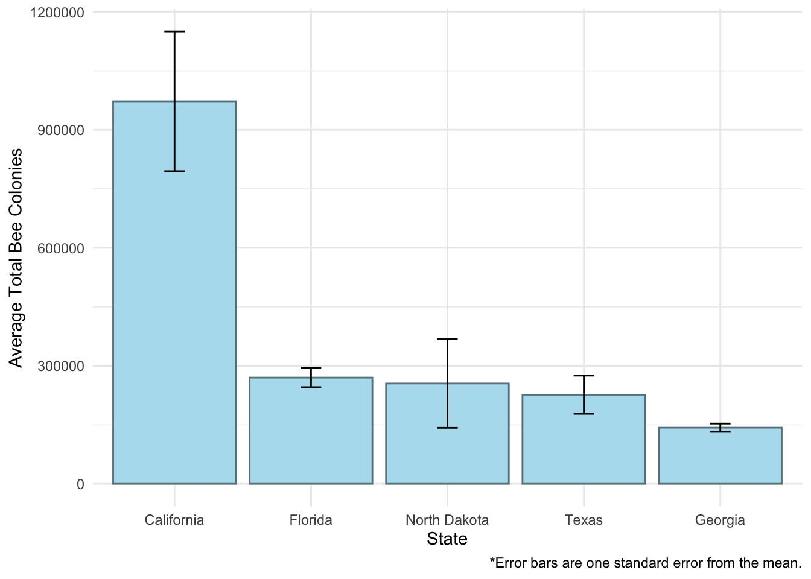
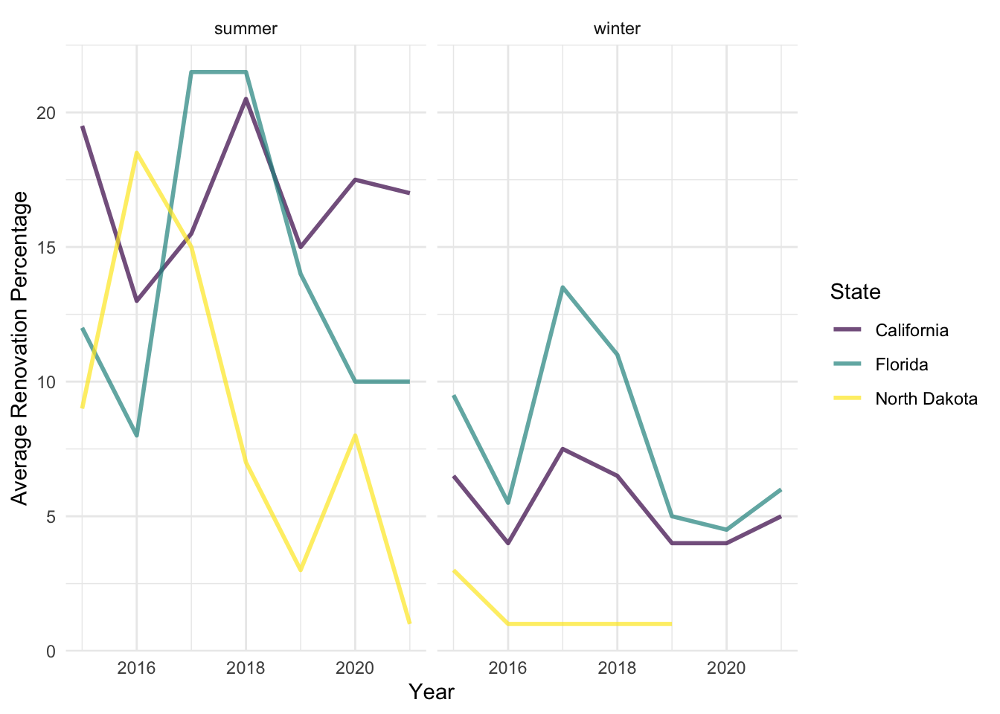
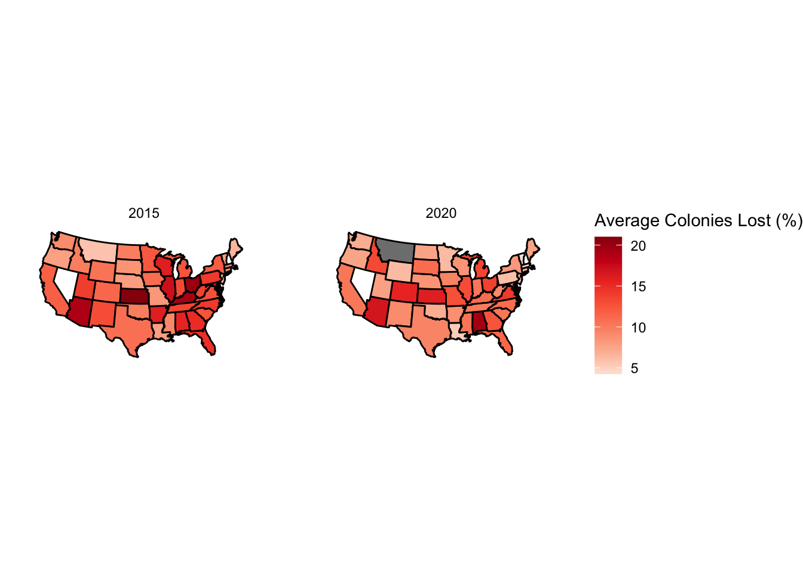

library(tidyverse)
library(maps)
library(here)
theme_set(theme_minimal())
colony <- readr::read_csv('https://raw.githubusercontent.com/rfordatascience/tidytuesday/master/data/2022/2022-01-11/colony.csv') |>
mutate(season = if_else(months == "April-June" | months == "July-September",
true = "summer",
false = "winter"))Bee Colonies Data Set Introduction
These bee colony data come from the United States Department of Agriculture (USDA) website. This data set consists of 10 variables regarding bee colony health across the United States. This data set includes data from 2015 through 2021 (year-round data from 2015 through 2020) with a total of 1,222 observations. I found this data set from tidytuesday on GitHub from the following URL: https://github.com/rfordatascience/tidytuesday/blob/master/data/2022/2022-01-11/readme.md.
Questions of Interest
- Which states have the most bee colonies in 2020?
- How have those states been at renovating bee colonies from 2015 to 2020?
- How have overall bee colony numbers in the United States changed between 2015 and 2020?
Variables of Interest
- year
- state
- colony_n: number of bee colonies
- colony_reno_pct: percent of total colonies renovated (either by re-queening or nucleus colony)
- colony_lost_pct: percent of total colonies lost
Which states have the most bee colonies in 2020?
## find top 5 states with the most bee colonies in 2020:
top5_total = colony |> filter(!is.na(colony_n) & year == 2020) |>
group_by(state) |>
summarise(average_colonies = mean(colony_n),
sd_colonies = sd(colony_n),
n_colonies = n()) |>
mutate(se = sd_colonies / sqrt(n_colonies),
lower = average_colonies - se,
upper = average_colonies + se) |>
arrange(desc(average_colonies)) |>
ungroup() |>
filter(state %in% c("California", "Florida", "North Dakota", "Texas", "Georgia")) |>
mutate(state = fct_reorder(state, desc(average_colonies)))
ggplot(data = top5_total, aes(x = state, y = average_colonies)) +
geom_col(colour = "lightblue4", fill = "lightblue2", position = "dodge") +
geom_errorbar(aes(ymin = lower, ymax = upper), width = 0.15, linewidth = 0.5, color = "black") +
labs(x = "State", y = "Average Total Bee Colonies", caption = "*Error bars are one standard error from the mean.")
Visual Takeaways: This plot shows the five states that are the most populous in bee colonies in 2020. California clearly has the most bee colonies for that year, also with the most variance from summer to winter months. I also want to point out that Georgia and Florida have relatively low variance throughout the year; this makes sense because their seasonal turnover is much less harsh than North Dakota and California.
How have the top three states been at renovating bee colonies from 2015 to 2020, both in summer and winter months?
top3_yearly = colony |> filter(state %in% c("California", "Florida", "North Dakota") &
!is.na(colony_reno_pct)) |>
group_by(year, state, season) |>
summarise(average_renovation_pct = mean(colony_reno_pct),
sd_reno = sd(colony_reno_pct),
n_reno = n()) |>
mutate(se_reno = sd_reno / sqrt(n_reno),
lower_reno = average_renovation_pct - se_reno,
upper_reno = average_renovation_pct + se_reno)
average_renovation_graph = ggplot(data = top3_yearly, aes(x = factor(year),
y = average_renovation_pct,
fill = state)) +
geom_col(position = "dodge", color = "black") +
facet_wrap(~season) +
scale_fill_viridis_d() +
labs(x = "Year", y = "Average Renovation Percentage", fill = "State")
average_renovation_graph
ggsave(here("posts/BlogPost3/average_renovation_graph.png"), average_renovation_graph)Visual Takeaways: The first trend I want to point out in this plot is that overall renovation percentage is much lower during winter months compared to summer months, even in places with mild winters like Florida. The difference appears to be much more drastic in the northern state of North Dakota where seasonal changes in climate are much greater. Additionally, there appears to be a peak in bee colony renovation in Georgia in 2016, followed by a constant decline in the following years. Conversely, California seems to be keeping up with their colony renovation, keeping their average renovation rate at around 18% during summer months and just over 5% during winter months.
How have overall bee colony numbers in the United States changed between 2015 and 2020?
state_df <- map_data("state")
state_bees = colony |>
mutate(state = tolower(state)) |>
filter(year == 2015 | year == 2020) |>
filter(!is.na(colony_lost_pct)) |>
group_by(state, year) |>
summarise(average_colonies_lost = mean(colony_lost_pct)) |>
mutate(year = as_factor(year)) |>
left_join(state_df, by = c("state" = "region"), relationship = "many-to-many")
ggplot(data = state_bees,
mapping = aes(x = long, y = lat,
group = group)) +
geom_polygon(colour = "black", aes(fill = average_colonies_lost)) +
coord_map(projection = "albers", lat0 = 39, lat1 = 45) +
theme_void() +
scale_fill_viridis_c(direction = -1) +
facet_wrap(~year) +
labs(fill = "Average Colonies Lost (%)")
Visual Takeaways: There appears to be an overall trend of improvement when it comes to average bee colonies lost, particularly across the eastern United States. The one state that doesn’t follow this general trend is Alabama where its average percent of colonies lost went from around 15% in 2015 to over 20% in 2020. On the other hand, the top five states from the first plot above (California, Florida, North Dakota, Texas, and Georgia) all saw a decrease in average bee colonies lost between 2015 and 2020.
Note: This data set does not include bee colony data for the state of Nevada.
Conclusion
This data set was particularly interesting to look at because I know that across the world, natural pollinators are on the decline on the global scale as a result of a loss of habitat with the ever-growing urbanization in our world. Bees also continue to be threatened by the invasive varroa mite and other diseases. This problem poses a concerning issue since we rely on natural pollinators, like bees, to pollinate our crops we use to feed ourselves and our animals. I found it somewhat surprising that in the United States in particular, there are efforts to renovate and support our bee populations. The final graph actually leaves us with a bit of hope that there does seem to be a positive trend of improvement when it comes to bee colony losses.
There may be some flaws to my approach in analyzing these data. I could have taken a different approach by looking at time series plots of bee colony numbers, renovation projects, and changes in colony losses over time. I am happy, however with the ways in which I presented the data. If I had more data (i.e. daily data), it would have been easier to construct a time series of the changes in bee colonies over time and try to make a predictive model for those changes.
Connections to Class Ideas
- These visuals are an effective way of communicating a story about bee colonies over space and time: I focused in on 5 of the states with the highest number of colonies and tried to share my findings in a way that is insightful.
- In particular, in the first plot, I was able to connect the interpretations of the standard error bars to real-world ecological processes.